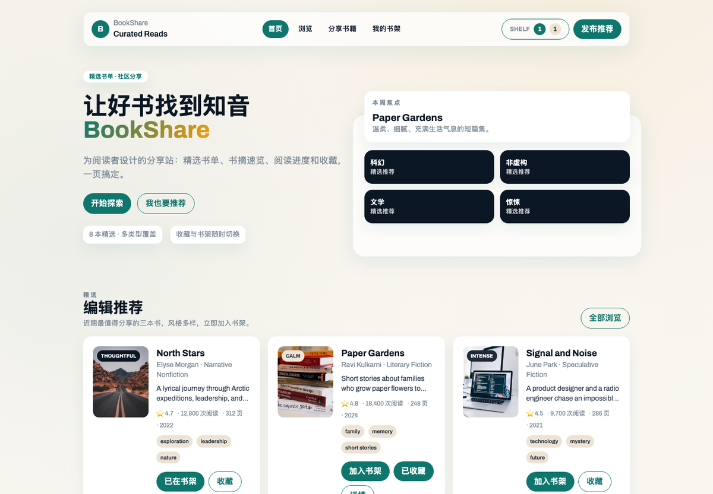
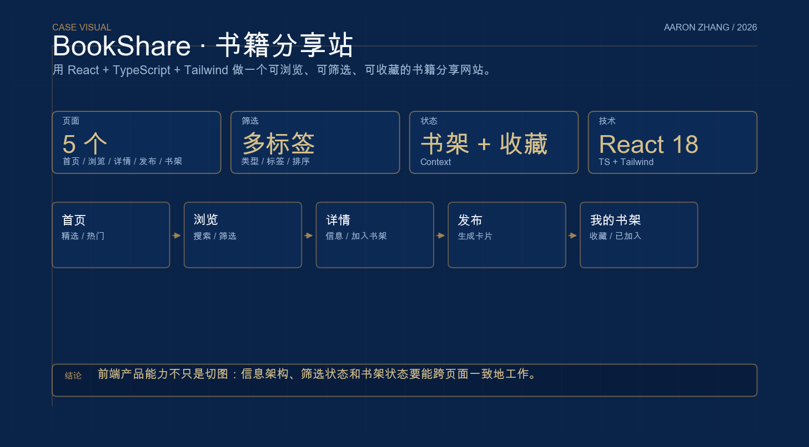

BookShare · 书籍分享站
用 React + TypeScript + Tailwind 做一个可浏览、可筛选、可收藏的书籍分享网站。
| 项目 |
Web 开发课程项目 · 课程项目（全面参与） |
| 时间 |
2025 秋 |
| 方向 |
前端开发 / 产品设计 |
| 关键词 |
React TypeScript Tailwind CSS React Router |
背景 / Context
书籍推荐和收藏通常分散在电商、社交平台和笔记工具里。BookShare 想做一个更轻的入口：既能浏览和筛选书，也能把书加入自己的书架，还能发布新的书籍卡片。
功能 / Features
- 首页：Hero、编辑精选、热门阅读、收藏回顾
- 浏览页：搜索、类型筛选、标签筛选、按热度/评分/上新排序
- 详情页：书籍信息、标签、格式、加入书架/收藏
- 发布页：提交书籍信息，即时生成卡片加入书架
- 我的书架：查看已加入与收藏的书籍
- 响应式布局、玻璃拟态卡片、深青绿 + 暖琥珀配色

技术 / Stack
- Vite + React 18 + TypeScript
- Tailwind CSS（含 line-clamp 插件）
- React Router v6
- 前端状态管理：Context
- 数据：本地初始书籍与标签数据
我的工作 / What I did
- 参与页面结构、组件拆分和交互设计。
- 实现浏览、筛选、排序、详情、发布、书架/收藏等页面。
- 处理响应式布局和卡片状态切换。
- 整理项目结构、运行说明和后续扩展方向。
结果 / Results
- 完成一个包含 5 个主要页面的可运行前端原型。
- 支持搜索、多标签筛选、排序、收藏和书架状态。
- 课程项目完成；目前没有公开的线上 Demo。
关键数据 / Key Numbers
| 指标 |
数值 |
口径 |
| 页面 |
5 个 |
首页 / 浏览 / 详情 / 发布 / 书架 |
| 筛选 |
多标签 |
类型 / 标签 / 热度 / 评分 / 上新 |
| 状态 |
书架 + 收藏 |
Context 跨页面传递 |
| 技术栈 |
React 18 + TS + Tailwind |
Vite + React Router |

图：首页、浏览、详情、发布、我的书架五个页面与搜索/筛选/收藏状态的关系。
结论 / Takeaways
- 前端产品能力不等于切图：信息架构、筛选条件和书架状态要跨页面一致地工作。
- 状态管理决定体验：收藏、已加入书架、筛选条件如果只在单页维护，用户很快会迷失。
- 原型边界要说明：这是课程项目，使用本地初始数据，没有公开后端和线上 Demo。
这个项目说明了什么 / What it shows
- 前端产品能力：从信息架构到组件和交互。
- 状态管理：书架、收藏、筛选条件在页面间的传递。
- 设计落地：把配色、字体、卡片和响应式布局做成一致的界面。
说明：该项目为课程项目，案例页不包含完整源代码；需要时可在面试中展示。